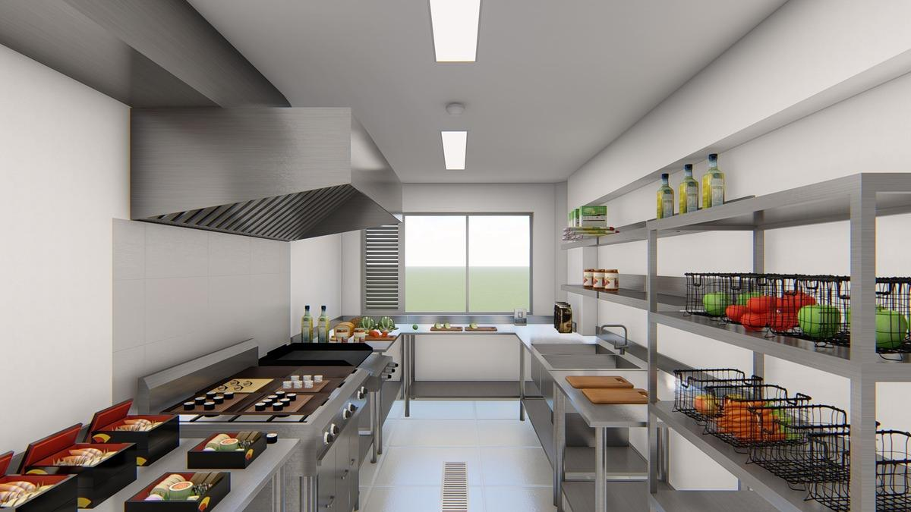
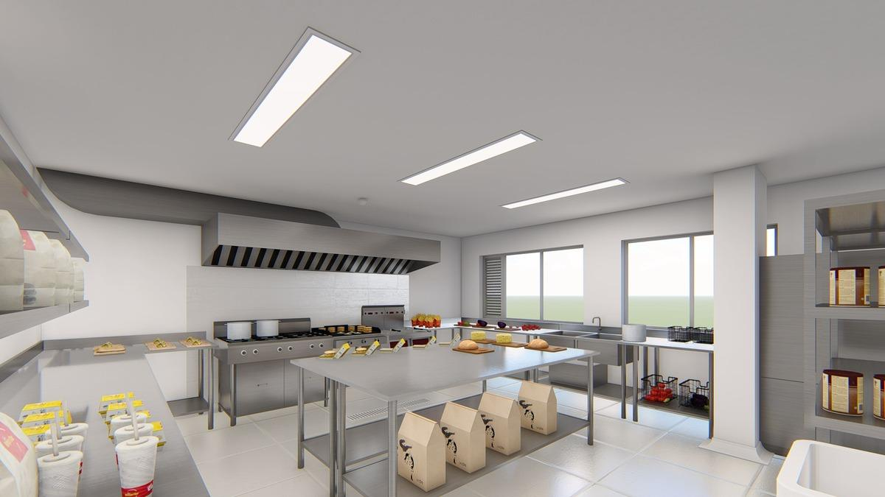
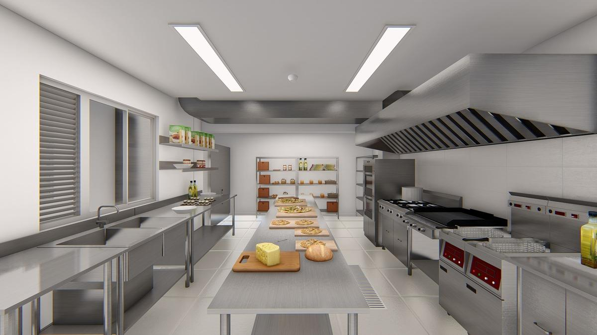

Produces, entregas a la moto y el pedido sale. Sin salón ni mesas.
Dark kitchens en Surquillo
Elige el tamaño, entra al hub y despacha en los distritos que más piden. La licencia, el despacho y la salida a la Vía Expresa ya están.
Agendar citaLo que un operador necesita el primer mes, ya resuelto.
Produces, entregas a la moto y el pedido sale. Sin salón ni mesas.
Cocina, despacho y patio de maniobras separados.
Av. Paseo de la República 4979. Sales directo a la vía rápida.
Campana, agua, gas y tomas vienen con la cocina.
La ficha técnica sigue en Cocinas. Aquí solo el tamaño y para quién sirve.

SMALLUna marca, un concepto. Para empezar sin sobredimensionar.
Ver cocina
MEDIUMPara crecer el menú sin mudarte de dirección.
Ver cocina
LARGEAlto volumen. Más estación y más salida de pedidos.
Ver cocinaLa visita es en el hub, en Surquillo.